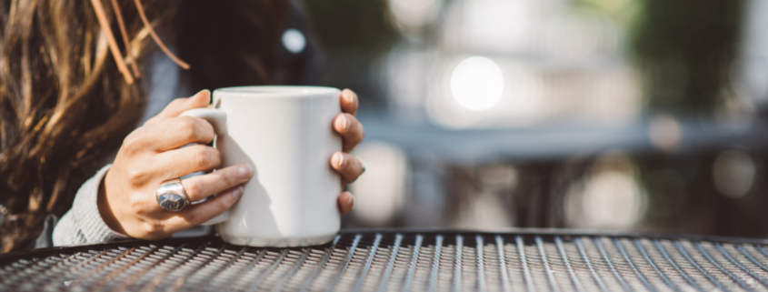

<div fxLayout="column" fxLayoutAlign="center center" fxLayoutGap="30px" style=" margin-top: 110px;" >
<mat-card>

<mat-card-title><h3>Time For Moms To Take A Break At The Best Restaurants In Delhi</h3></mat-card-title>
<mat-card-subtitle class="m-16-06">6th May 2022/by Dineout Passport</mat-card-subtitle>
<mat-card-content class="m-16-06">
<p>Mommies, we know you don’t get the credit you deserve. You do so much! Taking care of the family, looking after the kids, ensuring everything is just right for everyone is not easy and we don’t think just a day of celebration is enough. Mothers deserve the absolute best and that’s why the best restaurants in Delhi are all set to serve up a feast with a massive Mother’s Day discount! Excited? We sure are! </p>
<h2>Kheer</h2>
<p>This Indian restaurant is absolutely amazing! The colourful ambience with furnishings in ethnic prints and embroideries is absolutely gorgeous. The pretty lanterns illuminate the space, creating a relaxed and wonderful ambience. The Indian and Mughlai dishes are crafted by expert chefs who create these masterpieces using the finest ingredients and techniques. We recommend the Murgh Zamin Doz and Hare Matar Ki Tikki, paired with signature cocktails like Mr. Black and The Idealist. Be sure to use your Dineout Passport membership to get a 25% off the total bill.</p>
<h2>The Imperial Spice</h2>
<p>The Imperial Spice is a gorgeous restaurant with a regal ambience which is perfect for you to take the day of and enjoy some luxurious Indian, Continental and Mughlai preparations. You can pair dishes like Kashmiri Bharwan Aloo and Tawa Lamb Chop with refreshing cocktails like Watermelon Rain and Summer Thunder. The best part is that you can avail a solid 25% off the total bill if you’re a member of Dineout Passport. </p>


</mat-card-content>


</mat-card>

</div>
